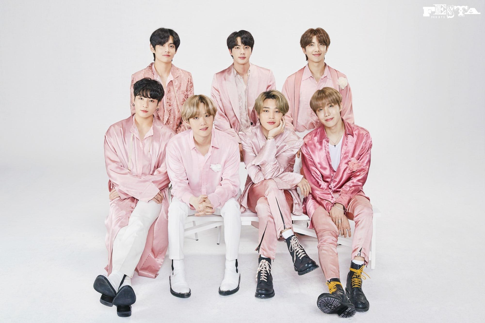
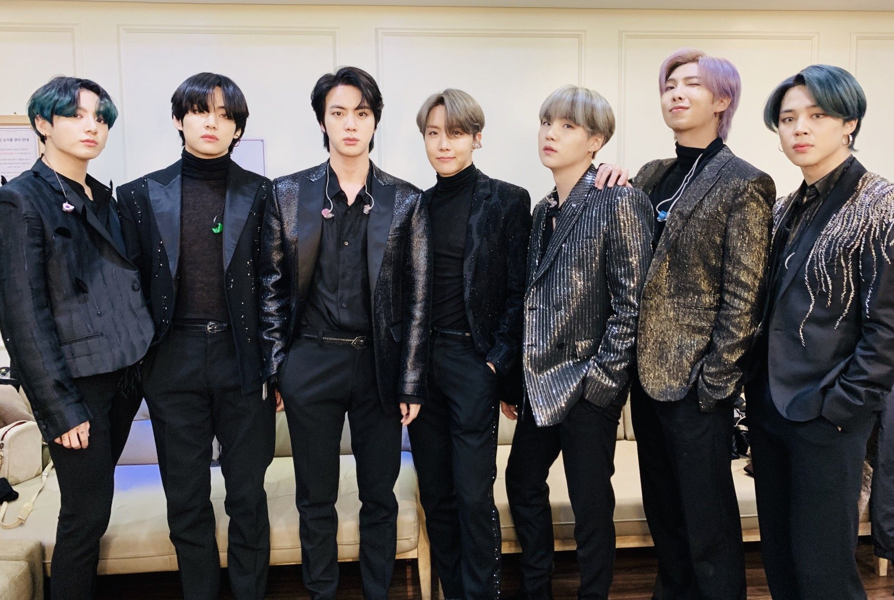

Перед вами имена участников на русском, на английском и на корейском языках, а также их псевдонимы.
Ким Намджун (Kim Namjoon, 김남준). Псевдоним: PM (RM).
Ким Сокджин (Kim Seokjin, 김석진). Псевдоним: Джин (Jin, 진).
Мин Юнги (Min Yoongi, 민윤기). Псевдоним: Шуга (Suga, 슈가).
Чон Хосок (Jung Hoseok, 정호석). Псевдоним: Джей-Хоуп (J-Hope, 제이홉).
Пак Чимин (Park Jimin, 박지민). Псевдоним: Чимин (Jimin, 지민).
Ким Тэхен (Kim Taehyung, 김태형). Псевдоним: Ви (V, 뷔).
Чон Чонгук (Jeon Jungkook, 전정국). Псевдоним: Чонгук (Jungkook, 정국).
В состав участников БТС входит семь человек. Каждый из них уникален и очень талантлив во многих областях. Но тем не менее в группе они занимают некоторые позиции.
Намджун(RM) – лидер, рэпер, продюсер, композитор, модель. Входит в хен-лайн и рэп-лайн.
Сокджин(Jin) – вокалист, продюсер, композитор, модель. Входит в хен-лайн и вокал-лайн.
Юнги(Suga) – рэпер, продюсер, композитор, модель. Входит в хен-лайн и рэп-лайн.
Хосок(J-Hope) – рэпер, танцор, продюсер, композитор, модель. Входит в хен-лайн, рэп-лайн и дэнс-лайн.
Чимин – вокалист, танцор, продюсер, композитор, модель. Входит в макне-лайн, вокал-лайн и дэнс-лайн.
Тэхен(V) – вокалист, танцор, продюсер, композитор, модель, актер. Входит в макне-лайн, вокал-лайн и дэнс-лайн.
Чонгук – макне, вокалист, танцор, продюсер, композитор, модель. Входит в макне-лайн, вокал-лайн и дэнс-лайн.
Музыка и творчество группы
Дебютный альбом группы из так называемой школьной трилогии Skool Luv Affair появился летом 2013-го в формате CD. Первенец BTS оказался более чем успешным и выиграл ряд престижных азиатских премий в 2013–2014 годах.
В 2014-м появился третий мини-альбом трилогии и песня Boy in Luv. Трек стал мегапопулярным, группа записала на него яркий клип, а диск занял 3-ю ступеньку в американском чарте «Биллборд».
Летом того же года бойз-бенд участвовал в фестивале «Мост в Корею», который проводился в России с целью укрепления туристических связей между двумя странами. Они дали небольшой концерт и выступили как судьи в танцевальных соревнованиях k-pop кавер-групп. На излете лета, в августе, корейцы отправились в Лос-Анджелес на фестиваль KCON.
В феврале 2015-го музыканты гастролировали по Японии, дав концерты в Токио и Осаке, а весной BTS отправились в тур по крупным городам Кореи. В это же время певцы презентовали третий мини-альбом — на тот момент единственный из корейских, который попал в топ-27 лучших альбомов года американского телевизионного канала «Фузи».
В ноябре в трехдневном туре музыканты презентовали трек Run и стали официальными представителями бренда «Пума». Популярность бойз-бенда выросла настолько, что на ежегодной премии MAMA (Mnet Asian Music Awards) в 2015-м группа удостоилась приза в категории «Лучший мировой перформер».
2016 год ознаменовался для многомиллионной армии фанатов приятным сюрпризом — дискография группы пополнилась двумя альбомами. Первый из них — Youth — стал вторым японским диском коллектива и попал на вершины чартов Страны восходящего солнца сразу после выхода. В первый день поклонники раскупили 44 тыс. копий.
Второй, состоящий из 15 треков и названный Wings, лидировал в iTunes почти 30 стран мира и стал событием № 1 на родине музыкантов. Спустя несколько дней после презентации Wings взлетел на вершину мировых альбомных и сингловых чартов и возглавил Social 50.
В феврале 2017-го музыканты представили публике расширенное издание топового альбома с заглавным синглом Spring Day. Композиция пробилась на вершины 8 популярных чартов страны и в первый день после релиза набрала 9 млн просмотров, установив рекорд среди коллективов Кореи.
В августе 2017 года команда представила фототизеры к дорамному проекту — трилогии Love Yourself («Люби себя»), третьему студийному альбому BTS. В мае 2018-го состоялась премьера 2-го мини-альбома трилогии с главным синглом Fake Love.
Популярность корейского мужского коллектива открыла двери на заседание ООН, где BTS выступили с речью о необходимости остановить насилие. Ким Намджун — на тот момент единственный англоговорящий представитель группы — привлек внимание к вопросу любви к себе, рассказав трогательные моменты из личной биографии и взаимодействия с поклонниками, которые не раз признавались, что музыка очень влияет на их состояние.
Именно это подтолкнуло участников коллектива вкладывать в тексты определенный посыл, дающий позитивное вдохновение молодому поколению. Музыканты взяли на себя ответственность, которая вышла за пределы творчества. Кампанию Love Myself, к которой присоединились BTS, проводил ЮНИСЕФ.
Вокалисты группы не только отлично пели, но и двигались, каждый их номер на сцене — маленькое шоу. Поэтому членов коллектива охотно приглашали в качестве судей на хореографические телепроекты. Оценивать танцы конкурсантов парни из BTS могут профессионально, ведь половина группы — виртуозы в этом деле.
Весной 2018 года BTS представили альбом Love Yourself: Tear, ставший лидером американского чарта Billboard 200, что сделало группу первой в истории корейского шоу-бизнеса, достигшей такого успеха.
Летом вышло переиздание диска под названием Love Yourself: Answer, а трек IDOL мгновенно стал лидирующим в чартах более чем 60 стран мира. За первые сутки ролик на него на платформе «Ютьюб» был просмотрен более 45 млн раз, что побило рекорды девушек из группы BlackPink и даже ранее непревзойденного PSY. По версии поклонников, зажигательная музыка, посыл текста и яркие наряды участников клипа сделали сингл одним из самых запоминающихся в карьере группы.

Осенью лица талантливых парней украсили обложку американского таблоида Time. Журнал поставил портрет музыкантов, снабдив лестным заголовком «Лидеры следующего поколения».
Президент Кореи упомянул группу в поздравительной речи в честь наступающего нового 2019 года, назвав BTS среди причин, почему граждане Европы и Америки проявляют интерес к культуре страны. Коллектив получил от правительства орден «За заслуги в культуре», побив рекорд и тут: музыканты оказались самыми молодыми обладателями награды.
Вручение ордена музыкальной группе объяснялось не только известностью, которую BTS принесли стране, но и вкладом в развитие Кореи. Ежегодно музыканты вливают в экономику государства $ 3,63 млрд. СМИ страны неоднократно писали об «эффекте BTS», когда сотрудничество с бойз-бендом увеличивало доходы и рост акций компаний. В начале 2019-го прибыль музыкального коллектива превысила $ 60 млн.
В феврале 2019-го артисты посетили 61-ю церемонию музыкальной премии «Грэмми», став первой корейской группой в истории мероприятия.
Весной 2019-го парни представили 6-й мини-альбом Map of the Soul: Persona. В апреле диск вышел на 1-ю ступеньку хит-парада «Биллборд Хот 100». За последние 20 лет это первая группа, которой удалось менее чем за год трижды оказаться на лидирующей позиции. В истории американского хит-парада подобное удавалось только знаменитому рок-квартету The Monkees в 1967 году и легендарным «Битлз» в 1995–1996 годах, когда 3 релиза архивных сборников «Антология» заняли три первых места менее чем за год.
Пандемия, набравшая обороты в 2020 году, положила конец второму запланированному мировому стадионному туру Map of the Soul Tour, но в июле BTS порадовали фанатов очередной пластинкой. Сборник под названием Map Of The Soul: 7 — The Journey включил в себя 13 треков. Однако по-настоящему прогремел англоязычный сингл Dynamite, вышедший через месяц и мгновенно ставший хитом. Видео на песню только за первые сутки набрало более 100 млн просмотров.
Весна 2021 года началась с разочарований для фанатов и участников, мечтой которых было получение престижной премии «Грэмми». Группа посетила мероприятие, проходившее в Лос-Анджелесе, но была заявлена с треком Dynamite лишь в одной категории «Лучший поп-дуэт/групповое исполнение» и уступила коллегам — дуэту Леди Гаги и Арианы Гранде, исполнившим Rain on Me.
Тем не менее мировой интерес к коллективу продолжил неукоснительно расти, а на западе BTS обосновались уже довольно прочно, что подтверждали их коллаборации с американскими звездами. Популярной стала и выпущенная совместно с Coldplay песня My Universe. К тому же треки группы вошли в ряд самых популярных мировых хитов на стриминговой платформе Spotify.
